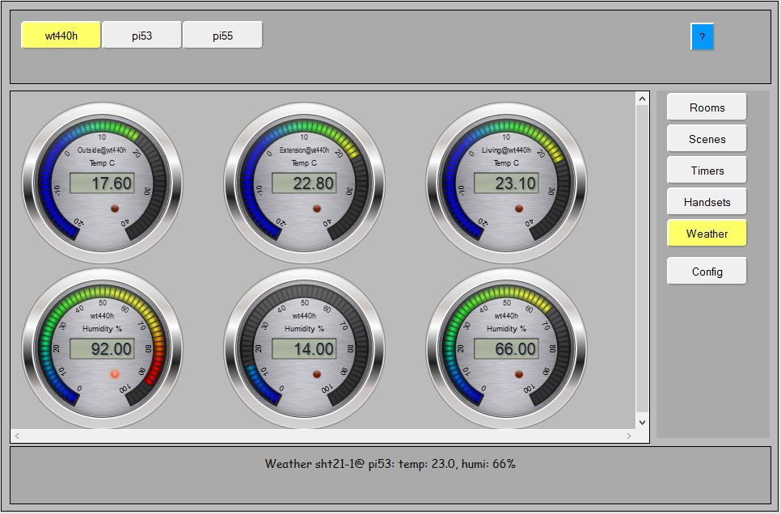
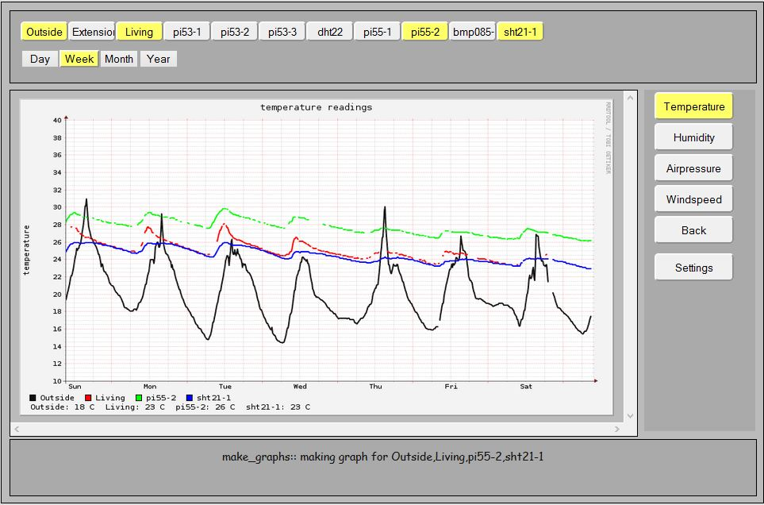

This part of the documentation describes the weather screen and what you can (and sometimes cannot) do with weather sensors. Since version 1.8 LamPI does support weather station sensors. At first only the UPM WT440H (outdoor) sensor is supported and it works fine. Other sensors can be added to the LamPI-receiver/sniffer program later, but it is good to know that the LamPI-daemon offers support for receiving Json messages from weather sensors.
If you like to know more about te various sensors, check out their "hardware" pages.
Of course temperature sensors can be meaningful in weather context, but also be used in energy applications. In the application I make that distinction (for the moment) as I expect most temperature, humidity and pressure sensors to be used most in context of weather. However, users are free to choose differently. As soon as I have my smart-meter up and running I will have a look at the energy sensors and their application as well.
Below you see a screenshot of the weather screen...

When clicking in the weather screen on one of the dials, a separate screen will open that shows historical data for the weather sensors. This function is described separately in the section for rrd graphs.

The Json message that is sent to the LamPI-daemon is as follows:
message = {
tcnt : integer,
type : 'json',
action : 'weather',
brand: wt440h # or other supported brand
address: integer, # (house code)
channel: integer,
temperature: integer.integer
humidity: integer,
windspeed: integer,
winddirection: integer, # in degrees
rainfall : char(8) # (mm per hour)
};
Weather sensors that are wireless 433MHz can be added to the LamPI-receiver by making a sensor function in C and including it in the receiver.c file and in the Makefile. The LamPI-receiver program in the ~/exe directory is the ONLY receiver for 433HMz messages and will handle all forwarding of successful receptions to the LamPI-daemon.
Next to the program itself, the sensor needs to be declared in the database.cfg file so that the LamPI-deamon knows that the incoming message for this address/channel is a source that we trust and allow access to our application.
Adding wired sensors can be one of the following:
For more info on wired weather sensors, read the sensors.html page
The LamPI-daemon will listen to all incoming json messages on its port 5000. Incoing messages from sensors will be matched against the configuration items in the database.cfg file for missing data such as names, location etc that are not sensor defined but defined by the user.
But in order to watch trends in data and analyze the collected data we need to add logging capabilities to the LamPI environment. There are several options:
The third option is attractive, as it will use external storage, services etc. to look at our data and the trend graphs are accessible from anywhere on the internet. The PAAS provider carriots.com provides this service for free for small users with up to 10 data streams.
The easiest method for analysing sensor data is to store all data collected to a local logfile on the PI, and import this file into excel on regular intervals. This is simple solution, and this also how I started.
There is a tools based on a round robin database tool that can be used to store sensors data and display graphs.
The PAAS (Platform As A Service) provider carriots.com provides a free membership for data analysis of a limited set of sensors.